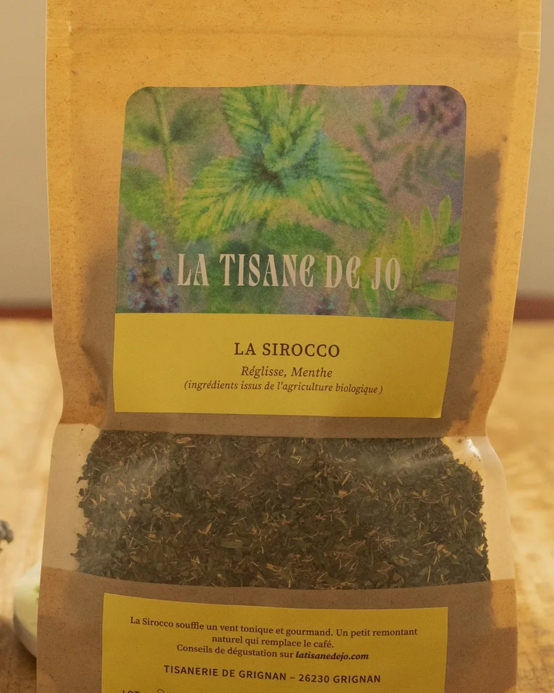

← Retour aux tisanes
La Sirocco
Nommée d'après le vent méditerranéen, cette tisane aussi tonique que rafraîchissante est parfaite pour remplacer le café.
À déguster du matin au soir, avec modération pour les personnes sujettes à l'hypertension.
Composition 100% bio : Menthe, Réglisse
Conseils de préparation
4G / 300ML / 5’
Mettre 4g du mélange dans 300mL à 90° et laisser infuser 5 minutes.

L'Originale
Anis, Réglisse, Fenouil, Romarin, Thym, Badiane